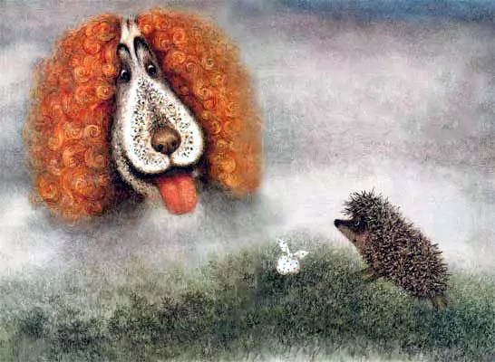
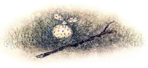

А когда вышел, за ним уже крался Филин, растопырив крылья.
Но Ёжик его не заметил.
Он нёс Медвежонку малиновое варенье и смотрел в небо. «Звезда!» — вдруг остановился Ёжик.
Филин чуть не налетел на него и тоже уставился в небо.
«И в луже Звезда…» — сам себе сказал Ёжик, увидев её отражение.
Филин тоже наклонился над лужей, но ничего, кроме себя, не увидел и,
рассердившись, взрыхлил своей мохнатой лапой воду.
А Ёжик уже глядел в тёмный старый колодец.
«Угу!» — крикнул Ёжик.
«Угу-у-у!» — загудел в ответ старый колодец. Ёжик спрыгнул на землю и на ходу гукнул, словно бросил камушек: «У-гу!».
И Филин, проходя мимо колодца, тоже крикнул: «Угу!..» и остановился, удивленный.
Колодец и ему ответил: «Угу-у-у-у-у!».
Филин взгромоздился на сруб колодца и снова крикнул: «Угу!».
И колодец в ответ, гулко: «Угу-у-у-у-у-у-у…».
Филин хихикнул и они заухали, прислушиваясь друг к другу — Филин и старый колодец.
А Ёжик со своим узелком уже семенил дальше, сам про себя беседуя с Медвежонком:
«А я ему скажу: „А я тебе малиновое варенье принёс”.
А он мне скажет: „Вот и самовар простыл, надо бы веточек подбросить… этих… ну как их… можжевеловых!”
А я ему скажу… а я ему скажу… а я е-му ска-жу…».
И вдруг застыл. Прямо перед ним из тумана выплыла белая Лошадь.
«А интересно, — подумал Ёжик, — если Лошадь ляжет спать, она захлебнётся в тумане?»
И он стал медленно спускаться с горки, чтобы попасть в туман и посмотреть, как там внутри.
«Вот, ничего не видно. И даже лапы не видно».
«Лошадь!» — позвал Ёжик.
Но Лошадь ничего не сказала.
И тут на Ёжика обрушился сухой Лист.
Ёжик от испуга закрыл лапами глаза… а когда выглянул… из под Листа, таинственно покачивая своим домиком, уплыла в туман Улитка… Ёжик опасливо приподнял сухой Лист…
И совсем рядом услышал дыхание:
«А-ха, а-ха!» — вздымая боками и раздуваясь до неба, задышал Слон. Или это был не Слон?
Ёжик аккуратно положил Лист на место и, пятясь, на цыпочках, ушёл в туман.
А из тумана выглянула большая, добрая голова Лошади. Голова вкусно пофыркивала и хрумтела травой.
«Фр-р-р!» — вздохнула лошадиная голова и сухой Лист, как живой, взметнулся и отполз в сторону.
Где-то вдали зазвенело и вдруг — «В-з-з-з!» — над головой Ёжика прянула и мгновенно пропала Летучая Мышь.
Ёжик даже не успел перепугаться, а вокруг него затрепетала, засеребрилась легкая стайка ночных Бабочек-Подёнок.
«Хе-хе-хе-хе-хе!» — передразнил Ёжик и даже пробежал следом за ними, подпрыгнул, замахал лапами, представив себя ночной Бабочкой, но вдруг замер, прижав узелок…
Из тумана, как из форточки, выглянул Филин, ухнул: «Угу! У-гу-гу-гу-гу-гу!..» и растворился в тумане.
«Псих», — подумал Ёжик, поднял сухую палку и, ощупывая ею туман, двинулся вперед.
Палка, как слепая, блуждала в темноте, пока не упёрлась во что-то твёрдое.
«Тук-тук!» — постучал Ёжик.
Положил узелок и, перебирая по палке лапами, увидел перед собой дерево с огромным дуплом.
«А-га!» — осторожно выдохнул в дупло Ёжик.
«А-а-а-а!» — загудело дерево. Ёжик попятился и вдруг вспомнил про узелок.
Он метнулся назад, обежал дерево, крутнулся на месте… Узелка не было. Дерево медленно заволокло туманом. Ёжик остался один.
«Ё-ёж-и-и-и-и-к!» — будто с края земли донёсся чей-то крик.
Туман сгущался вокруг Ёжика.
Ёжик сорвал травинку, на которой сидел Светлячок, и, высоко подняв её над головой, как со свечой, наклоняясь и вглядываясь себе под ноги, побрёл в тумане.
Деревья, как мачты, тонули во мгле. Светлячок — маленький зеленый маяк — еле-еле теплясь, покачивался в тумане, освещая дорогу.
Но и он упал в траву и погас. Стало совсем темно.
Туман закружился вокруг Ёжика. И Ёжик побежал. Ему казалось, что из тумана за ним несётся огромная Улитка, Летучая Мышь, Филин… задышал Слон, обрушился Лист с дерева. Ёжик упал в траву и закрыл лапами голову.
Но тут из тумана появилась Собака. Она положила перед Ёжиком узелок, зевнула во всю собачью пасть и пропала в тумане.

Издалека донёсся голос Медвежонка:
«Ё-ёжи-и-и-и-ик!».
«О-го-го-го-го!» — рванулся на крик Ёжик, но — бул-тых! — упал в воду.
«Я — в реке, — похолодел от страха Ёжик и, немного погодя, решил, — пускай река сама несёт меня».
Он глубоко вздохнул и река понесла его вниз по течению.
Высоко в небе горели звёзды, над ним проплыла голова Лошади, где-то далеко тоненько играла балалайка…
«Я совсем промок. Я скоро утону», — подумал Ёжик.
Вдруг кто-то дотронулся до его задней лапы.
«Извините… — беззвучно спросил Кто-то, — кто Вы и как сюда попали?»
«Я — Ёжик, — тоже беззвучно ответил Ёжик, — я упал в реку».
«Тогда садитесь ко мне на спину, — беззвучно проговорил Кто-то, — я отвезу Вас на берег».
Ёжик сел на чью-то широкую скользкую спину и через минуту оказался на берегу.
«Спасибо!» — вслух сказал Ёжик.
«Не за что!» — беззвучно сказал Кто-то, кого Ёжик даже не видел, и пропал в волнах.
Ёжик с узелком сидел на брёвнышке и смотрел прямо перед собой остановившимися глазами.
Послышались чьи-то торопливые шаги. «Ёжик! Где же ты был? — плюхнулся рядом запыхавшийся Медвежонок, — я звал, звал, а ты не откликался!..»
Ёжик ничего не сказал. Он только чуть скосил глаза в сторону Медвежонка…
«Я уже и самовар на крыльце раздул, креслице плетёное придвинул, чтобы удобнее звёзды считать было… вот, думаю, сейчас придёшь, сядем, чайку попьём, с малиновым вареньем, ты ведь малиновое варенье несёшь, да? А я и самовар раздул и веточек этих… как их?..»
«Мож-же-ве-ло-вых», — медленно подсказал Ёжик.
«Можжевеловых! — Обрадовался Медвежонок, — чтобы дымок пах… И… и… и… и в… и в… ведь кто же, кроме тебя, звёзды-то считать будет?!»
Медвежонок говорил, говорил, а Ёжик думал:
«Всё-таки хорошо, что мы снова вместе».
А ещё Ёжик думал о Лошади:
«Как она там, в тумане?..»
Было тихо.
В ночном небе ярко горели звезды.
Филин переговаривался с колодцем.
«Угу-у!» — говорил Филин.
«Угу-гу-гу-гу-гу-гу!» — отвечал ему Колодец.
«Угу-у!» — кричал Филин.
«Угу-гу-гу-гу-гу-гу!» — гудел Колодец.
«Угу-у!»
«Угу-гу-гу-гу-гу-гу!»
«Угу-у!»
«Угу-гу-гу-гу-гу-гу-у-у!»
